In no particular order:
- Tuning 2 cars and fixing no start the night before a 1500 mile road trip: Image 1 and 2
- A camping trip the night before we finalized the “first” tunes of the turbo Miata and WRX EJ20g rebuilt project that we had spent the summer working on. During the drive home at 2 am the Miata cut and had to be flat towed to our shop. There we diagnosed a faulty alternator plug which was replaced and zip tied. Both cars made it to the U.P. and back with no issues. H.85 was amazing.
- Surviving the Great Smokey’s: Image 3 and 4
- During a backpacking trip we chose to setup camp on a mountain ridge. There was thunder by midnight so we decided to head to bed. At 4 am I was awoken by a bright light that lasted far to long followed by the shaking of thunder that was far too close. I look over at my tent mate Ricky, a member of Team Opposite Lock, who is fetal position on top of his backpack with his towel over his body (“I don’t think I need a sleeping pad, as long as we aren’t sleeping on rocks it should be fine” – Ricky). I had a 2 inch sleeping pad which was overkill for the backpacking trip, however, entirely submerged in water. It turns out the 14 year old tent my parents gave me was not water proof anymore.
- On another trip, specifically for the Tail of the Dragon, the WRX was having a very unresponsive left turn. We determined that the shock was somewhat seized to itself and needed to be rebuilt and remounted on itself. We did that at the campsite.
- South Dakota, Field of Cows: Image 5, 6, 7, 8
- Seeing the Corn Palace, Camping in a field of cows, backpacking near Mount Rushmore thinking the monument was on the East Coast only to be jump scared by George Washington through the distant trees.
- Reaching the Summit: 9
- Competing at Finalbout as a team of college students and being crowd favorites
- Seeing the northern lights: 10, 11, 12
- Seeing the Northern Lights in the Mazda and also missing out in the Skyline
- Red River Gorge Rock Climbing:
- First time natural rock top roping, very fun!
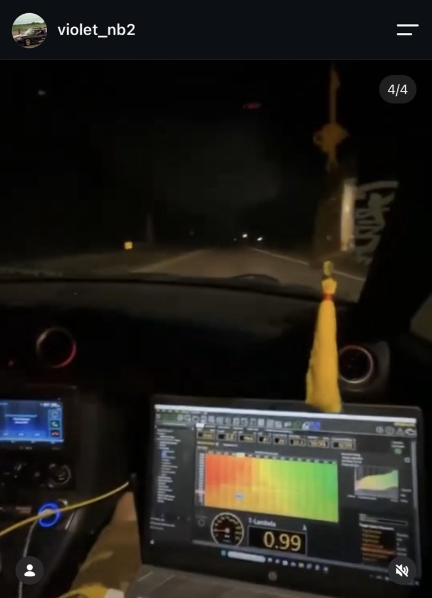
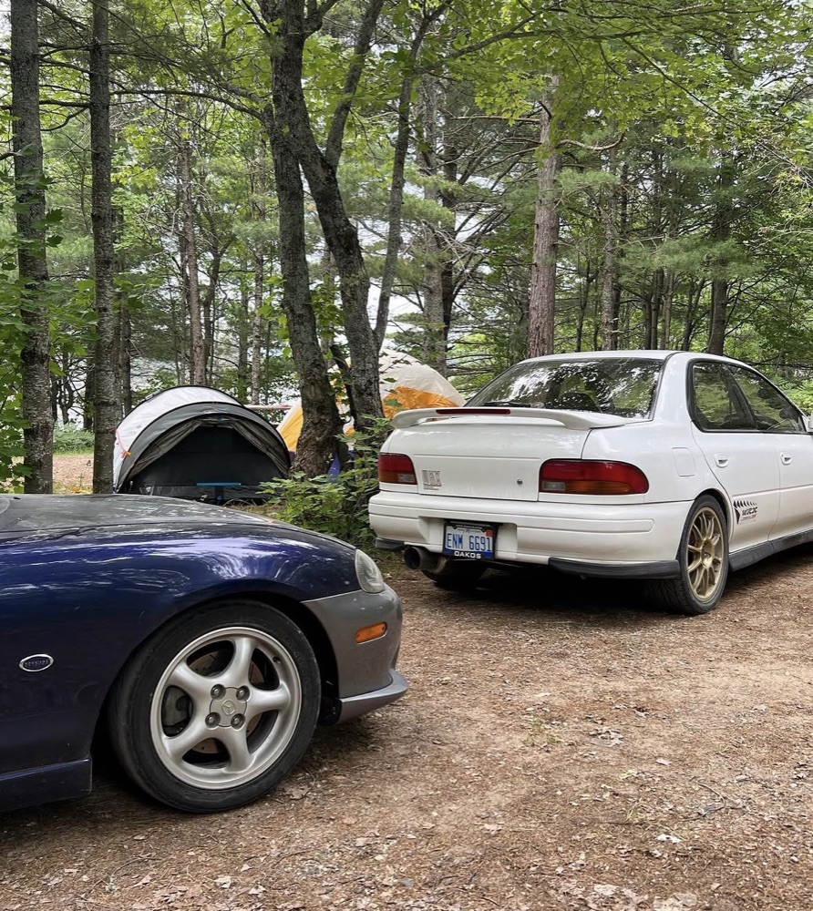
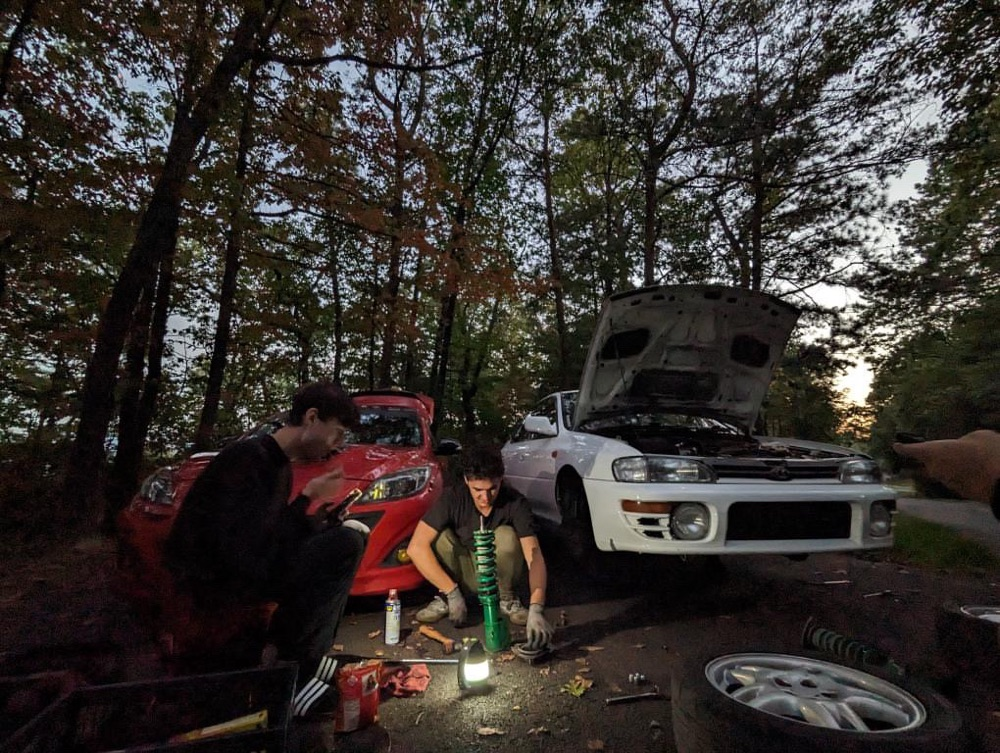
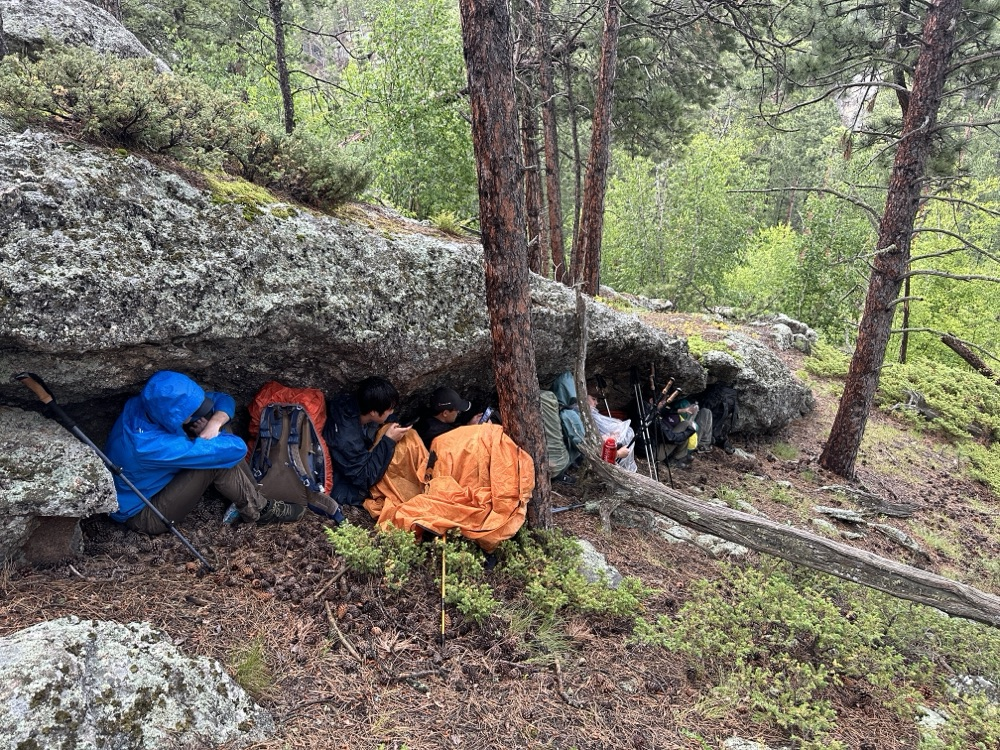
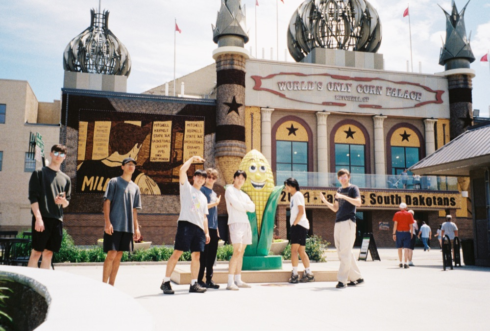
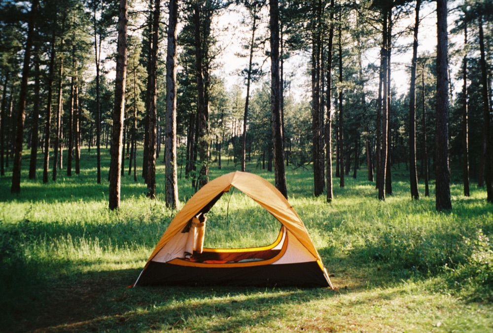
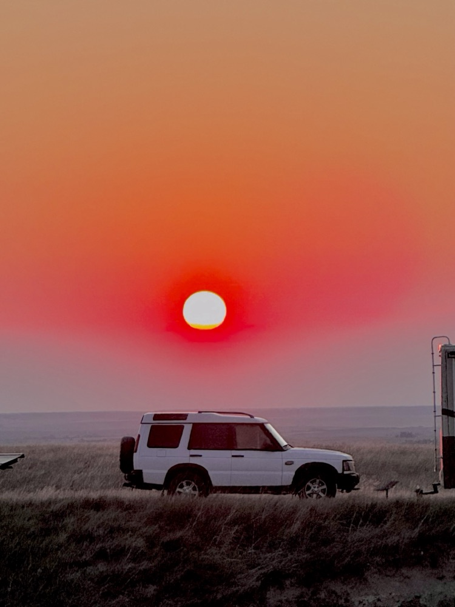
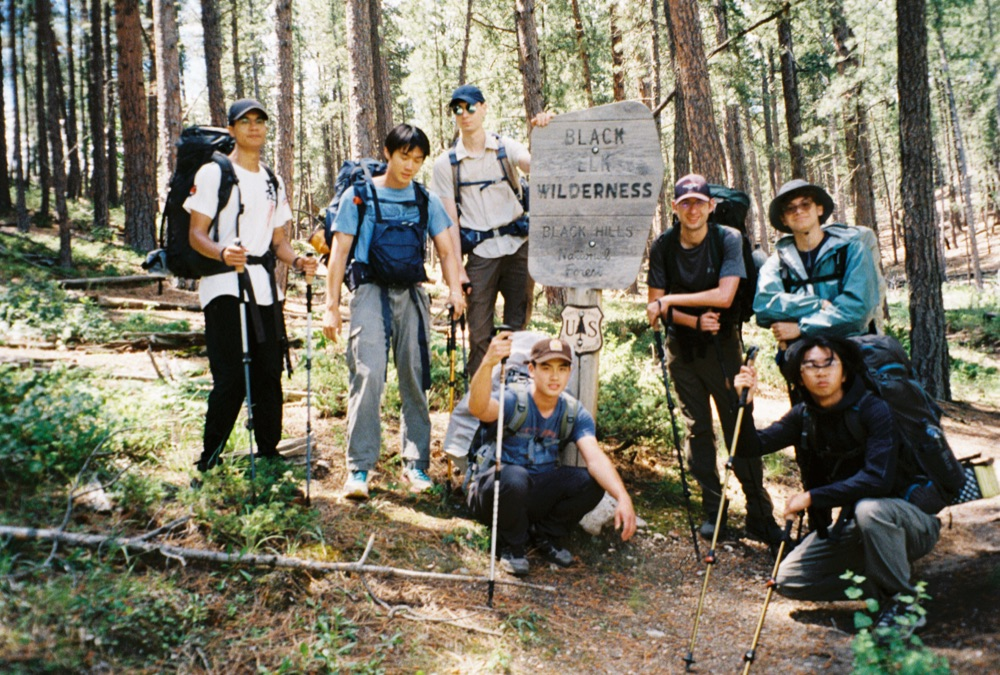
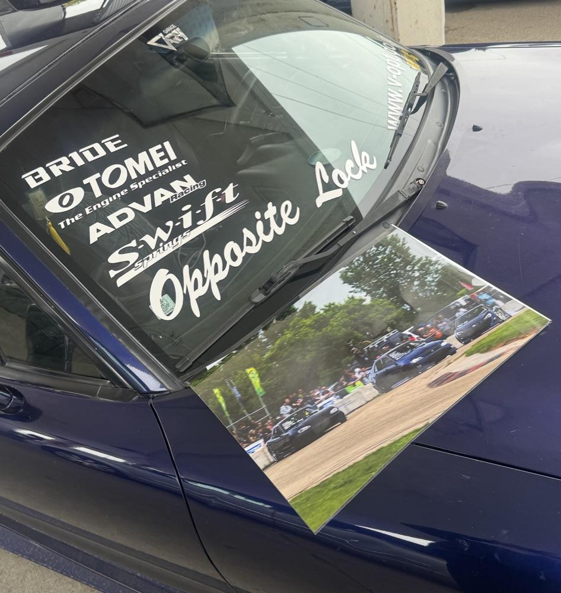
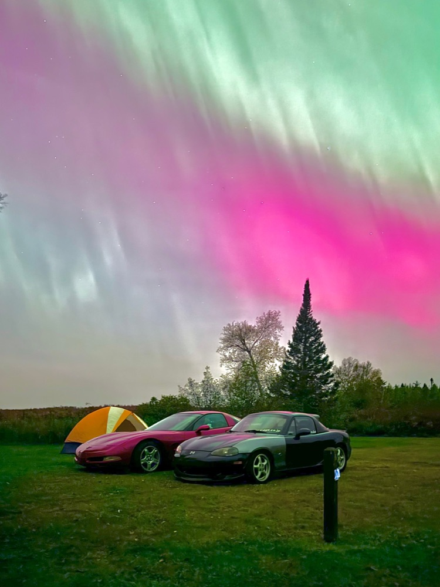
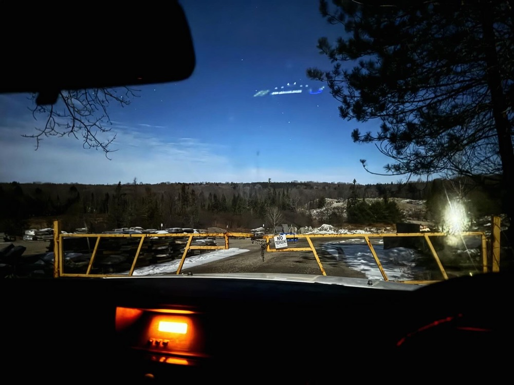
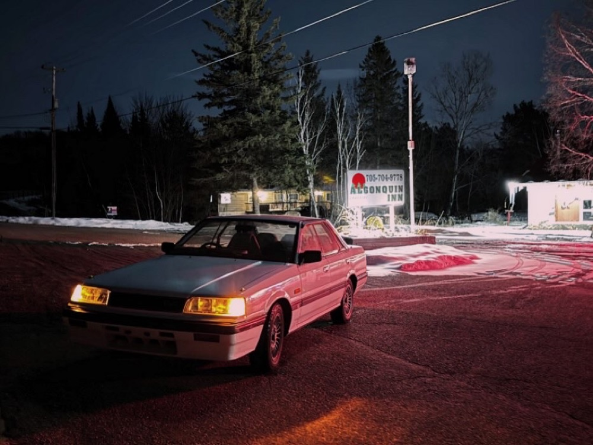
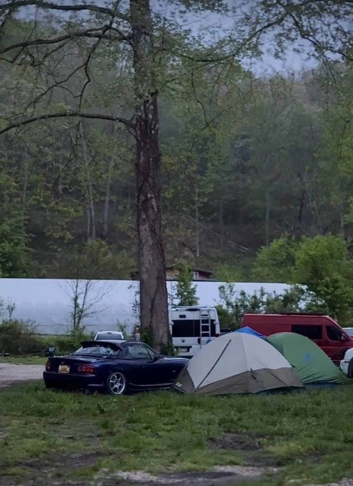